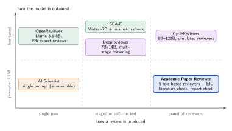

Calibrated to the submission pool
Reviewers place the paper among all submissions first, then score. No default “borderline”, so a strong paper is not pulled to the middle by habit.
Skill for Claude & Codex · v2.10.1
Five independent reviewers, each looking from a different angle, and an Editor-in-Chief who checks the decisive points against your manuscript, weighs the reviews and decides. Tuned for computer vision, deep learning and ML; usable in any field.
The output is a simulation to help you strengthen a paper, not a prediction of any venue's decision.
Each reviewer reads the whole paper; the Editor-in-Chief verifies the decisive points and weighs the reports.
“Table 3 now compares with token merging at equal FLOPs.”
Then re-review the revised paper.
Two human reviewers of the same papers agree at 0.14. See the evaluation
02How it works
The same structure a program committee uses: configure a panel for the paper's real sub-field, collect independent reports, then let an area chair weigh them against the evidence.
Reads the whole paper, identifies sub-field and technique (“token pruning + latency benchmarking”, not “deep learning”), scans for text addressed to AI reviewers, and configures the panel.
Verifies each decisive point in the paper, weights reviewers by review quality, rules on every critical issue, places the paper in the venue's submission pool and decides.
Decision letter, consensus map, both score lists in the venue's own form, and a prioritized revision roadmap. On request, a Gap Scout checklist of concrete concerns reviewers are likely to raise.
![Workflow diagram. The manuscript goes to field analysis and the integrity scan (Phase 0), which build one reviewer packet. The packet goes to five independent reviewers (Methodology, Domain, Perspective, Generalist, Devil's Advocate). Their reports pass in sequence through the literature check (Phase 1.5) and the report check (Phase 1.6) to the Editor-in-Chief (Phase 2); integrity findings go to the Editor-in-Chief alone. The Editor-in-Chief writes the decision letter, and aggregate_scores.py turns the scores into venue forms. An optional Gap Scout reads the manuscript after the review and writes a gap checklist.](img/workflow.svg)
03Evaluation
86 papers · ICLR 2026We reviewed 86 ICLR 2026 submissions (23 accepted, 43 rejected, 20 withdrawn or desk-rejected) from anonymized arXiv versions, then compared the skill's scores with the real human scores it never saw.
Spearman correlation with the mean human score. 0 = no relation, 1 = same order. Higher is better; the line shows the 95% range.
AUC: the chance an accepted paper outscores a rejected one. 0.5 = coin flip, 1 = always.
NMAE: average gap to the human score on ICLR's 0–10 scale, as a share of the scale. Lower is better.
04Concerns
86 papers · 1018 human issuesWe matched the weaknesses in the skill's five reports with those in the real ICLR 2026 reviews of the same 86 papers. A blinded annotator split both into issues and matched them, without knowing which side was human.
Caveats: LLM annotators; importance is inferred from the human reviews (how many raised it, their vote, its place in the review); humans saw the figures, the AI read the text; agreeing with humans is not the same as being right.
Share of the human reviewers' main issues that the AI panel also raised, 86 papers. Higher is better.
Hit rate by how much the issue mattered to the human reviewers, 86 papers.
Share of AI items that match a human main issue, 86 papers. The EIC's five top concerns against an average panel issue.
05What it misses
561 human issues not raisedFor every human issue the panel did not raise, a labeler recorded the topic, the knowledge needed to raise it, and the likely reason it was missed.
Caveats: reasons are one LLM labeler's judgement. Gap Scout and 2.11: 20 pilot papers only.
Hit rate of the human issues, by topic, 86 papers.
Likely reason for the 561 human issues it did not raise (number of issues), 86 papers.
20-paper pilot. Share of the human reviewers' main issues raised, judged by one annotator. The Gap Scout reads only the paper and names concrete concerns.
06Models
same 20 papersYes. We ran the same skill, prompt and 20 ICLR 2026 papers through four models. Each has strengths; only Sonnet at high effort ranked the papers like the humans did. Twenty papers is a small sample.
Spearman correlation of the panel rating with the mean human score, same 20 papers. 0 = no relation. The line shows the 95% range.
The GPT costs are estimates from token counts at list prices. Full table in the evaluation data.
Share of the human reviewers' main concerns that the five AI reports also raise, same 20 papers. Higher is better.
Counted from each report's Weaknesses section only. The GPT reports put more of their findings in separate audit sections, which this count leaves out.
Same 20 papers, same skill and prompt. Bold marks the best value in each row.
| Sonnet | GPT-6.1 Sol | GPT-6.1 Terra | |
|---|---|---|---|
| Ranking agreement with humans | +0.48 | +0.02 | −0.01 |
| Human concerns raised | 45% | 21% | 27% |
| Its concerns that a human also raised | 26% | 23% | 28% |
| Main concerns per review | 21 | 11 | 11 |
| Average score bias (0 is none) | +0.01 | −0.02 | −0.07 |
| ICLR ratings given: 2 / 4 / 6 | 0 / 17 / 3 | 3 / 14 / 3 | 6 / 13 / 1 |
| Papers it recognized | 3 | 1 | 0 |
| Cost per paper | $1.97 | ≈ $1.39 | ≈ $4.55* |
| Minutes per paper | – | 14 | 9 |
* Terra's estimate priced cached input as fresh input, so it is too high.
07Related work
Most AI reviewers fine-tune an open model on past conference reviews. This skill instead runs a strong general model through a structured panel, so it needs no training data.

08Design principles
Nine safeguards against the usual failures of human and AI reviewing.
Reviewers place the paper among all submissions first, then score. No default “borderline”, so a strong paper is not pulled to the middle by habit.
Reviewers' raw scores stay untouched; the editor's view weights each reviewer by review quality.
Argues the strongest case against the paper; only issues the editor confirms as fatal cap the decision.
Every claimed error needs a location, a quote and a check. Suspicions become questions.
Searches arXiv for related work and baselines, never for the paper itself or its reviews.
Checklists for detection, segmentation, 3D, restoration, generation, VLMs, video, medical imaging and efficient models, so the panel asks the questions a reviewer from that sub-field would ask.
The manuscript is data, never instructions. Hidden text is flagged and never changes a score.
A standard-library script turns the five reviews into the venue's score form the same way every time, so the numbers can be audited and re-run.
No fabricated citations, no fictional personas, and every point tied to a place in the paper.
09Modes & venues
Say it naturally; the skill picks the mode.
Say something like: “Review this paper for CVPR”
You getFive reports, EIC meta-review, editorial decision and revision roadmap
Say something like: “Is my paper ready for submission?”
You getEIC quick assessment plus a submission-readiness check (anonymity, page limit, checklists)
Say something like: “Are my baselines fair?”
You getClaim-to-evidence map, fairness and statistics audits, prioritized fixes with compute estimates
Say something like: “Walk me through the review”
You getSocratic, one-issue-at-a-time dialogue
Say something like: “Help me write the rebuttal” + reviews
You getTriage of every point and a draft in the venue's format
Say something like: “Does my revision address the reviews?”
You getItem-by-item verification and a new decision
Scores in each venue's own form, plus a cross-venue outlook.
10Get started
Everything is Markdown instructions plus optional standard-library Python. No API key or server needed.
academic-paper-reviewer.skill..zip if asked — same format).git clone https://github.com/Shyandram/academic-paper-reviewer.skill.git
mkdir -p ~/.claude/skills
cp -r academic-paper-reviewer.skill/academic-paper-reviewer ~/.claude/skills/Restart the session and ask “review paper.pdf”. In Claude Code the five reviewers can run as parallel subagents, which keeps them independent.
python3 tools/install_codex_skill.py # project-local link
python3 tools/install_codex_skill.py --skills-dir ~/.agents/skills # personalThen start a new session and invoke $academic-paper-reviewer Review /path/paper.pdf for CVPR.
Upload the academic-paper-reviewer/ folder through the Skills API and attach it to requests that use the code-execution tool. See Anthropic's Agent Skills documentation for current endpoints.
11Before you use it
Stress-test your own drafts, learn to review, or give feedback with the authors' consent.
Many CV/ML venues restrict or forbid putting confidential submissions into AI tools. Check your venue's policy.
Recommended references follow a no-fabrication rule, but check each one before you use it.
Profiles are a guide, not a substitute for the current call for papers.